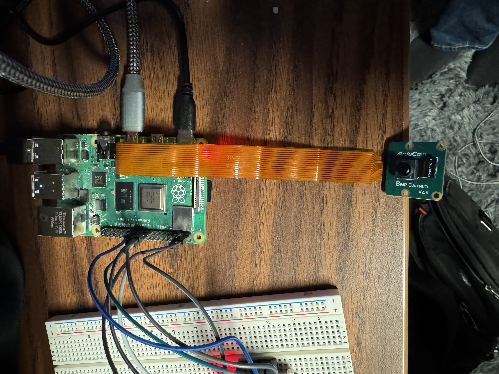
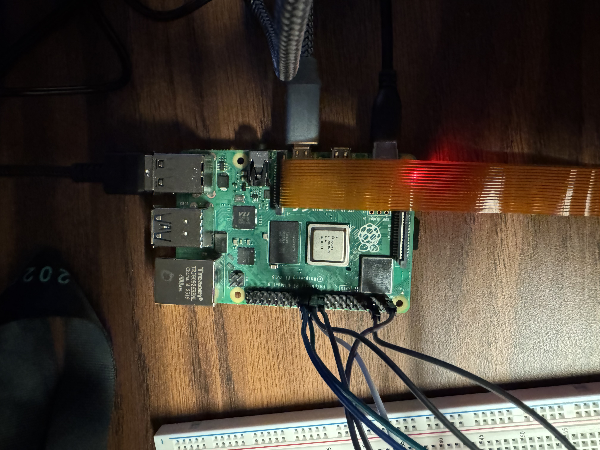
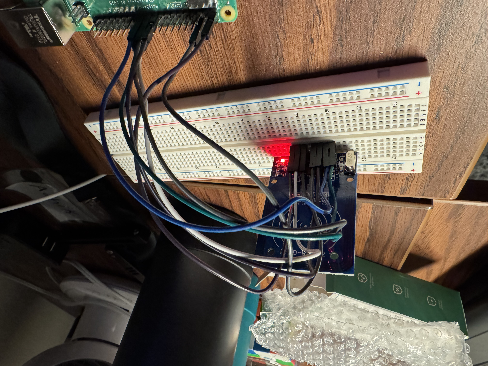

Discovery Project
For my Discovery Project, I wanted to build something that combined hardware, software, and a real-world application of embedded systems. After seeing how many security systems only have one form of authentication, I decided to create a multi-factor access control system using a Raspberry Pi, an RFID scanner, and a camera. The goal was to simulate a secure door-entry system where access is only granted if both an authorized RFID tag is scanned and a human face is detected by the camera.

Project Details / Background
I chose this idea because it allowed me to explore several foundational areas of electrical and computer engineering: sensor integration, GPIO communication, digital logic, computer vision, and embedded Linux. I also liked the idea of creating something interactive where I could witness the results.
The project uses a Raspberry Pi as the controller, an RFID reader to authenticate tags, and a camera to perform a simple human-face detection check before granting access. The system demonstrates how multiple sensors and verification modes can be combined to strengthen a common embedded application.
Project Progress
I began the semester by outlining the core components of the system and gathering available hardware: a Raspberry Pi 4, an RC522 RFID reader, an Arducam IMX219 ribbon camera, a breadboard, jumper wires, and RFID cards. The first milestone was getting the Raspberry Pi fully set up, installing Raspberry Pi OS, enabling SSH, and verifying that the Pi camera subsystem worked.
After confirming the camera worked with the rpicam-hello preview tool, I integrated it into Python using OpenCV. This enabled real-time video streaming and face detection using Haar cascades. Separately, I set up the RC522 RFID module over SPI, verified my wiring, and used test scripts to reliably read card UIDs.
Once both systems worked independently, I combined them into a single program. The final script waits for an RFID card, checks if it matches an authorized UID, and then gives the user up to 15 seconds to present their face to the camera. If both conditions are satisfied, the system displays “ACCESS GRANTED” for five seconds before shutting down. If any part fails, like wrong card or no detected face, it displays “ACCESS DENIED.”
By the end of the project, I had a fully functional prototype demonstrating multi-factor authentication on embedded hardware.
Successes and Challenges
One of the biggest successes of this project was getting the camera and computer vision pipeline fully operational. Raspberry Pi OS changed quite a bit with the Bookworm release, so many online tutorials using the old libcamera stack no longer worked. Getting OpenCV to interface properly with Picamera2 required careful debugging and reading updated documentation.
Another challenge was the RFID library installation. Python package restrictions in Bookworm initially prevented system-wide installation. After researching PEP 668 and SPI requirements, I found a modern library compatible with the Pi and successfully integrated it. These issues taught me how to troubleshoot compatibility problems and read error logs critically.
The face detection and RFID systems both worked reliably once integrated, and seeing the full project come together was extremely rewarding.
ECE Skills Gained
GPIO and Sensor Interfacing
I learned how SPI communication works on the Raspberry Pi and how to use GPIO pins to interface with external sensors like the RC522 RFID reader.
I learned how SPI communication works on the Raspberry Pi and how to use GPIO pins to interface with external sensors like the RC522 RFID reader.
Embedded Linux Development
I gained experience working in a Linux environment, installing libraries, debugging system-level issues, configuring interfaces, and using terminal tools.
I gained experience working in a Linux environment, installing libraries, debugging system-level issues, configuring interfaces, and using terminal tools.
Computer Vision Fundamentals
Working with OpenCV, Haar cascades, and real-time video processing provided practical exposure to CV concepts.
Working with OpenCV, Haar cascades, and real-time video processing provided practical exposure to CV concepts.
Python for Hardware Control
I built a complete embedded application in Python that integrates multiple asynchronous input sources into a single control-flow system.
I built a complete embedded application in Python that integrates multiple asynchronous input sources into a single control-flow system.
Problem Solving and Debugging
Most issues did not have direct answers online due to OS changes, so I learned to troubleshoot hardware, dependency conflicts, and real-time sensor issues independently.
Most issues did not have direct answers online due to OS changes, so I learned to troubleshoot hardware, dependency conflicts, and real-time sensor issues independently.
Final Thoughts
Completing this project increased my interest in embedded systems, computer architecture, and hardware-software integration. It was one of the first times I built something that combined physical hardware, sensors, computer vision, and Python logic into a working final product. The experience made me more confident working with Raspberry Pi, SPI devices, and real-time data processing.
I would like to continue improving the system in the future by adding features like storing access logs, using a facial recognition neural network rather than simple detection, adding a physical servo “door lock,” or hosting a local dashboard to manage authorized users.
Overall, this Discovery Project helped me build practical ECE skills, strengthened my interest in computing hardware, and gave me a strong foundation for future embedded and systems engineering projects.
Video Demo
Below is a short demo showing the system in action.
Image Gallery

Hardware setup: Raspberry Pi, RFID reader, and camera.

RFID tag used to authenticate users.

Face detection flow used as the second authentication factor.